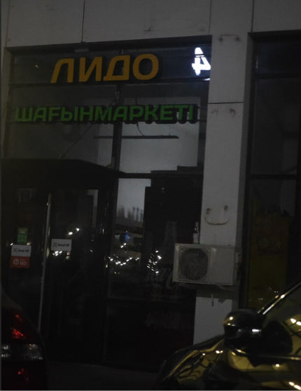

Everyday groceries, close to home
Welcome to Lido at Uly Dala Avenue, 31. Browse essentials, build your shopping list and visit us any time - we are open 24/7.
Browse 50 products Opening hours Prepare a product request
Shop by category
Five everyday categories, with 10 products in each. Choose a category to start your shopping list.
Catalogue names and recorded prices are sourced from Galmart in Astana. Check Lido prices and availability before visiting.
About Us

More about our store range
Lido has a big range of commodities offered in various departments. People may purchase dairy products, bread, beverages, frozen products, sweets, fruits, vegetables, meat, and cleaning materials. The supermarket also contains a section of non-food commodities such as toys, socks, and accessory items. More details on these sections can be found on the Products page.
Opening Hours
Lido Grocery Store is open 24/7, which makes it convenient for customers who need to buy groceries early in the morning, during the day, or late at night.
The store can be used both for quick purchases and for larger everyday shopping.
About This Website
Use this website to browse categories, compare recorded product prices and prepare a shopping list. Our store information and original store photos come from our visit to Lido. The expanded catalogue uses product names, prices and photographs from Galmart's public Astana listings; these are reference prices and do not confirm Lido's current stock. Online orders and payments are not supported yet.